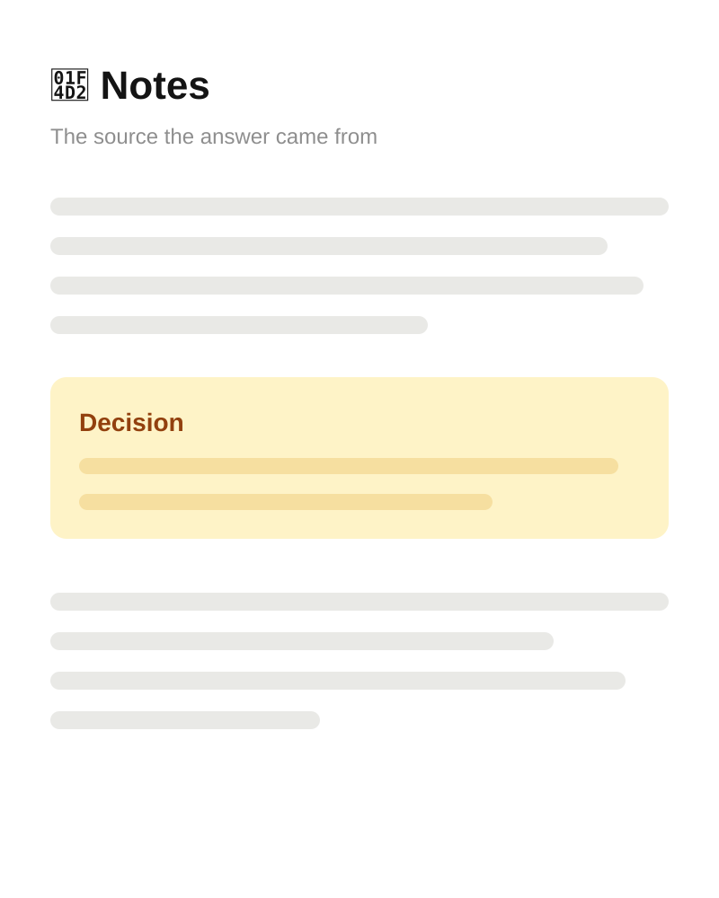

Architecture walkthrough · Team brown bag
The write path
Four steps. No updates.
- 01Append the event
- 02Assign a sequence number
- 03Fan out to projections
- 04Serve the snapshot


Drawnthree illustrative screens, not captures
Replays
Replay the log. Watch stock rebuild.
Why it mattersA projection is disposable. Drop it, replay from event one, and it comes back identical.


Thank you!
How the ledger works. One event at a time.
Rev. A · Questions open ✓
 Grab the slides
example.com/slides
Grab the slides
example.com/slides
Presenter extra · honest limits
What the ledger doesn’t do. Yet.
- No multi-item transactions. One event, one item; a recipe is several events.
- Compaction is a nightly job, so a cold replay can take minutes, not seconds.
- No deletes. A wrong event is corrected by a compensating event, never removed.
Append-onlyReplayableSingle writer